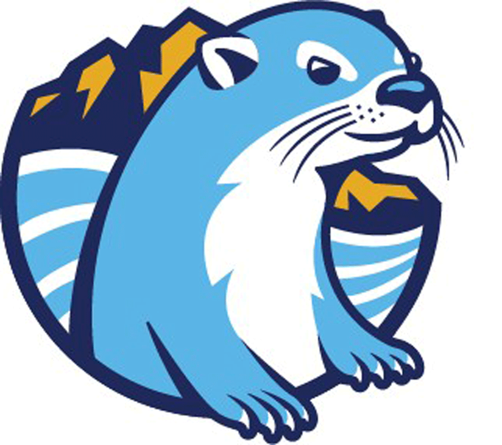

Time Poverty
Students balance work, family, transportation, and school.
Click to reveal responseDesign Response
Use flexible structures, embedded support, time-aware practices, and clear expectations that reduce unnecessary friction.
GFC MSU River Otters
An interactive tool for helping students recognize, name, and translate transferable skills developed through General Education coursework.

Students develop valuable workplace skills throughout their academic experiences, but those skills are not always visible to them. This tool supports a shared language between coursework, advising, career readiness, and student reflection.
Student success is shaped by systems, relationships, visibility, flexibility, and the ability to connect learning to future goals. Select each stage to explore student needs and institutional responses.
Students need clear, early information about programs, costs, expectations, and opportunities.
Institutions can improve visibility through outreach, pathway clarity, advising access, and culturally responsive communication.
Select a card to reveal a design response. Many barriers are design problems, not motivation problems.
Students balance work, family, transportation, and school.
Click to reveal responseUse flexible structures, embedded support, time-aware practices, and clear expectations that reduce unnecessary friction.
Students may not see how courses connect to goals.
Click to reveal responseMake course purpose, degree pathways, transfer relevance, and career connections visible early and often.
Students practice valuable skills without knowing how to name them.
Click to reveal responseUse reflection prompts, resume language, and NACE-aligned skill translation to help students articulate what they can do.
Flip the cards to connect common student questions with employer-facing language.
Why does this course matter for my future?
Click to reveal translationThis course helps students build communication, reasoning, and problem-solving skills used across transfer programs and workplace settings.
What skills show up beyond the course title?
Click to reveal examplesClear communication, professionalism, collaboration, evidence-based decision-making, adaptability, and information literacy.
Select a General Education category and course to see how academic learning can become resume-ready language.
Communication
Employers may not recognize course titles, but they understand communication, teamwork, leadership, problem-solving, and adaptability.
Think about assignments, presentations, projects, discussions, or challenges that demonstrate your skills.
Flip each card to see how General Education can support career readiness language.
Students practice writing, speaking, listening, and adapting messages for audience and purpose.
Students evaluate evidence, solve problems, and make reasoned decisions.
Students practice preparation, follow-through, accountability, and quality work.
Students reflect on growth, identify strengths, and connect learning to future goals.
Students do not automatically translate academic work into career language. Reflection prompts help students identify what they practiced, how they grew, and how to explain that growth to others.